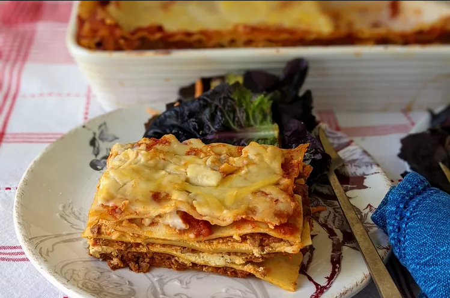

Lasagna is a type of pasta, possibly one of the oldest types, made in very wide, flat sheets. In Italian cuisine it is made of stacked layers of pasta alternating with fillings The dish may be topped with grated cheese, which melts during baking. Typically cooked pasta is assembled with the other ingredients and then baked in an oven. The resulting baked pasta is cut into single-serving square or rectangular portions.